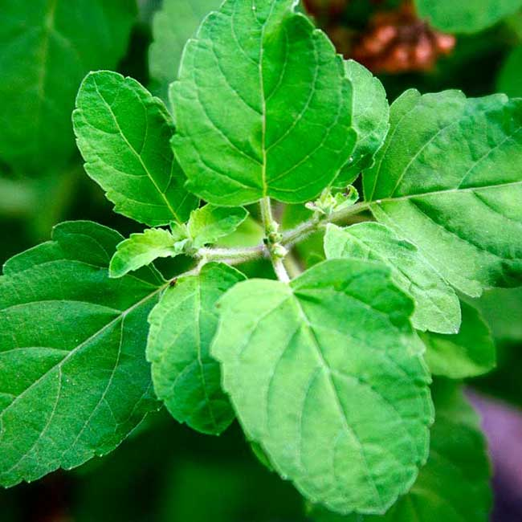
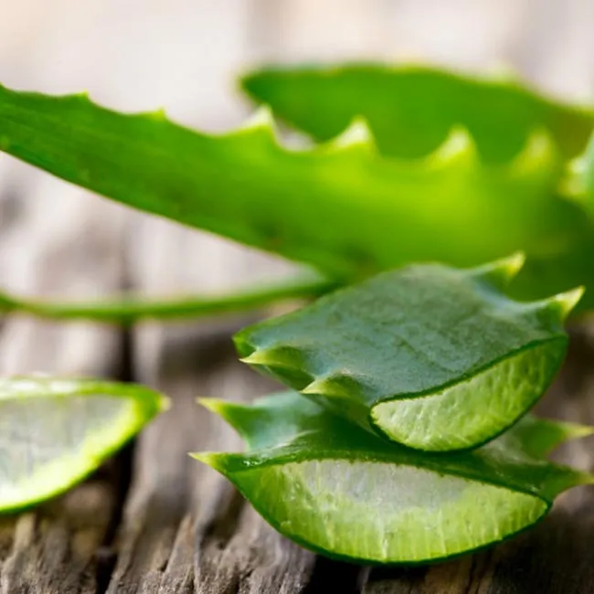
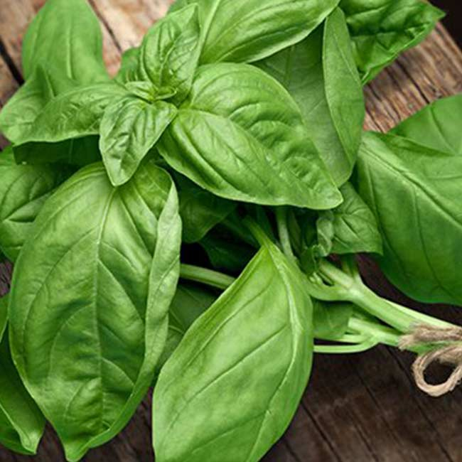
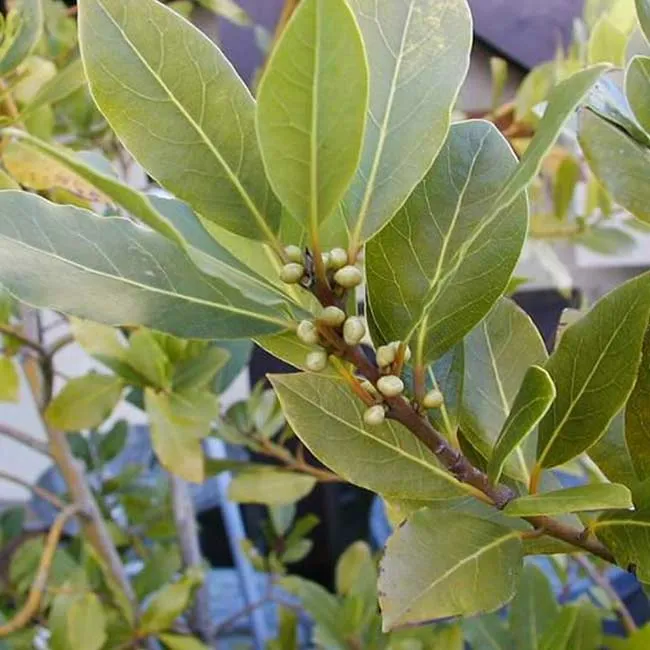
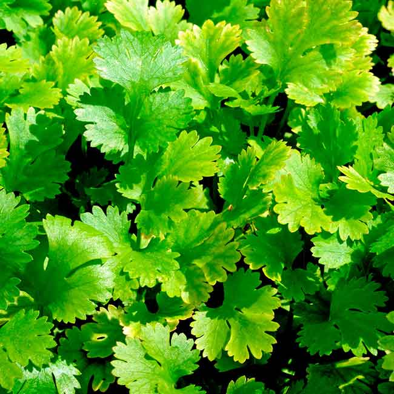
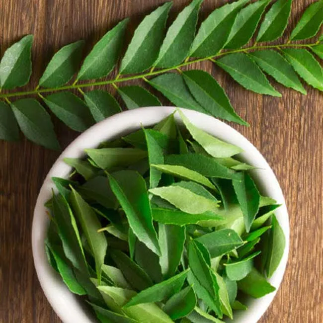
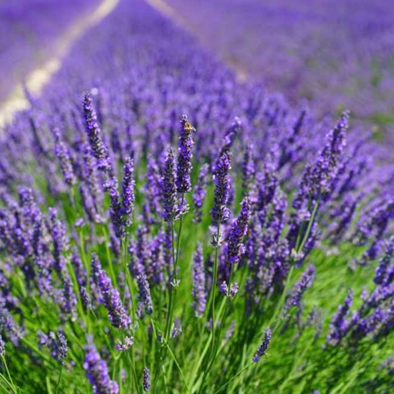
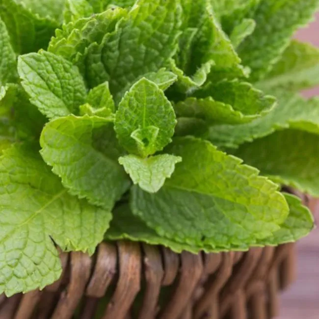
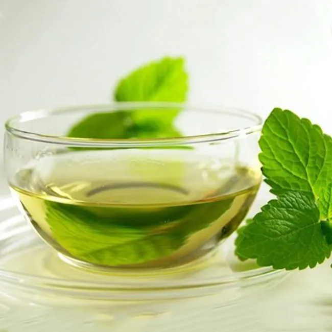

-There are no side effects when natural medicines are used because these medicinal plant remedies are in sync with nature.
-There is no huge investment when medicinal plants are brought home.
-In comparison to the box of pharmaceutical medicines, these plants are quite cheap.
-The leaves, bark, seeds, or any part of the medicinal plants can be consumed by people of any age group.
-Medicinal herbs and plants used in cooking retain their properties aiding the body.
Coriander or ginger are mostly used in regular Indian cuisine and they are really beneficial.
Ajwain

The Ajwain plant grows in clusters and looks quite similar to the money plants. The Ajwain plant leaves have beautiful ridges and they require regular trimming. They can tolerate direct sunlight and grow copiously.
Ajwain or carom seeds have anti-bacterial and anti-inflammatory properties that treat stomach problems like peptic ulcer, reduces blood pressure, enhances digestion, and reduces cholesterol level.
Aloe Vera

Aloe Vera is perhaps the oldest known medicinal plant in the world. Many people use it at home both to beautify the space and to use the gel. Some prefer to consume Aloe Vera juice while some apply the gel on skin and hair for youthful skin and mane. In cosmetics and medicine industry too, this plant is hugely used. The extract of Aloe Vera is a brilliant skin healer. The Aloe Vera gel helps to soothe skin injuries, burning, skin irritations, cuts, and insect bites. It also reduces skin swellings.
Basil

A fairly warm temperature, a well-drained soil, regular watering, pruning, and fertilizing once a month is all a Basil plant wants. In return, it provides stronger immunity, great digestive system, treats inflammatory diseases, fights free radical, deep cleanses the skin, lowers diabetes, reduces depression, and detoxifies the body. As a garnishing to various dishes, in soups, or in salads – Basil is consumed.
Bay

In a well-drained soil and with a supply of the generous amount of compost, bay tree prospers well. In any regular Indian home, bay leaves are commonly used in various dishes from vegetarian to non-vegetarian. This leaf has been used by some to treat cancer, gas, dandruff, and joint pain or boils. Some prefer to use it in tea and bay leaf boiled in water is a wonderful cough syrup. It is suggested to crumble the bay leaves in various dishes and consume it. It contains various micronutrients along with Vitamin A, B6, C, iron, manganese, and calcium.
Coriander

Watering and fertilizing are necessary to maintain a healthy coriander plant. The coriander leaves contain Vitamin C, K, calcium, protein, potassium, thiamin, phosphorous, niacin and carotene. Coriander leaf stimulates the insulin secretion and lowers the blood sugar levels. It also lowers cholesterol level, treats Alzheimer’s disease, promotes good liver function and bowel movement, reduces inflammatory diseases like arthritis, cures mouth ulcer, prevents eye diseases with its antioxidants, and cures anaemia.
Curry Leaves

Curry leaf is another Indian spice. To temper, various side dishes and main dishes curry leaves are used since ages. It helps in weight loss, treats dysentery & constipation, good for diabetes patients, heals wounds and cuts, provides good eyesight, relieves nausea, and even improves memory.
Lavender

Full sun and well-drained soil are the prime requirements for a prosperous lavender plant. This herb is native to North Africa and the mountains of the Mediterranean. It is widely popular for the essential oil that is derived from the distillation of the flower spikes of certain lavender species. This oil has both cosmetic and medicinal uses. Lavender oil carries antiseptic and anti-inflammatory properties and that helps in healing burns and bug bites. Lavender oil is also a great agent in curing stress, anxiety, depression, and insomnia. Lavender tea is also important in curing digestive problems & nausea.
Mint

Mint plants love moist soil, warm temperature, and bright to partially bright sunlight. Mint plants are widely known for the cooling sensation they divulge. In fresh or dried conditions both – they are used as a garnishing in food items. Mint Chutney is quite famous among Indians. Mint is a great source of Vitamin A, manganese, folate, and iron. It improves irritable bowel system, improves brain function, aids in digestion, also improves cold symptoms, and is the easiest cure for bad breath.
Mustard
The yellow mustard seeds are rich in vitamins, polynutrients, and minerals. The mustard seeds are rich in selenium that has immense anti-inflammatory properties. They are also rich in magnesium and that helps in reducing the severity of asthma attacks, symptoms of rheumatoid arthritis, and lowering blood pressure. Mustard seeds are great for digestion as they enhance the metabolism of the body.
Tulsi

In any Indian family, a Tulsi plant is easily found and it is a practice that has been followed religiously by generations. The ancestors knew about the healing properties of Tulsi and thus made it mandatory (back then) to plant a Tulsi at home. Since ages Tulsi has been a powerful agent in reducing high blood pressure and high cholesterol, treating asthma, headache, cold, cough, indigestion, sinusitis, gastric disorder, cramps, ulcers, etc. It is also believed to treat arthritis and diabetes.